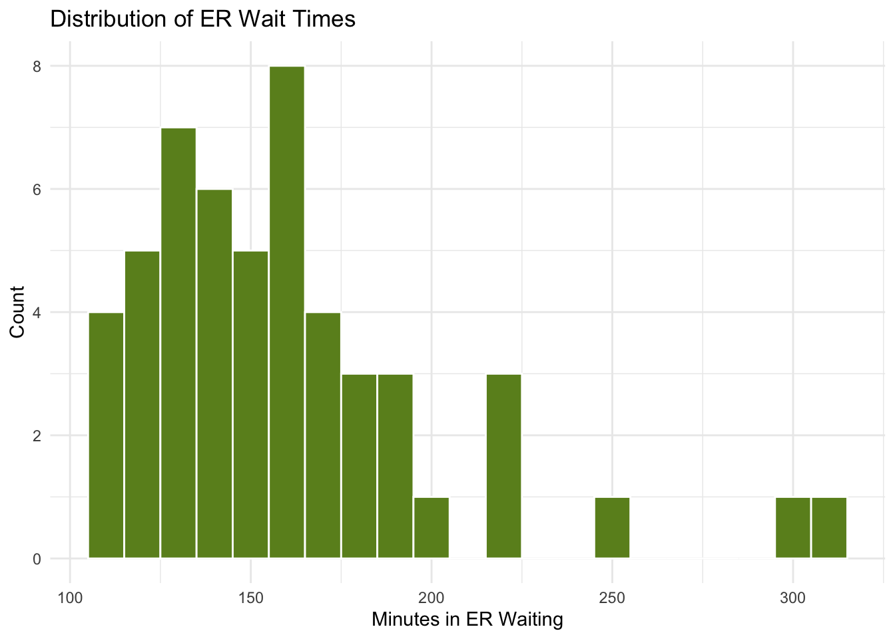
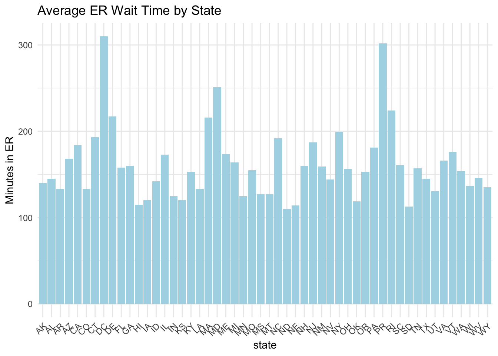
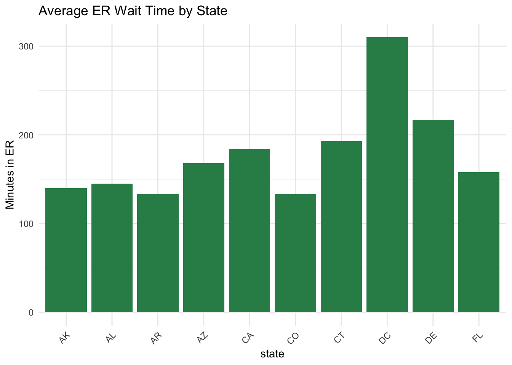
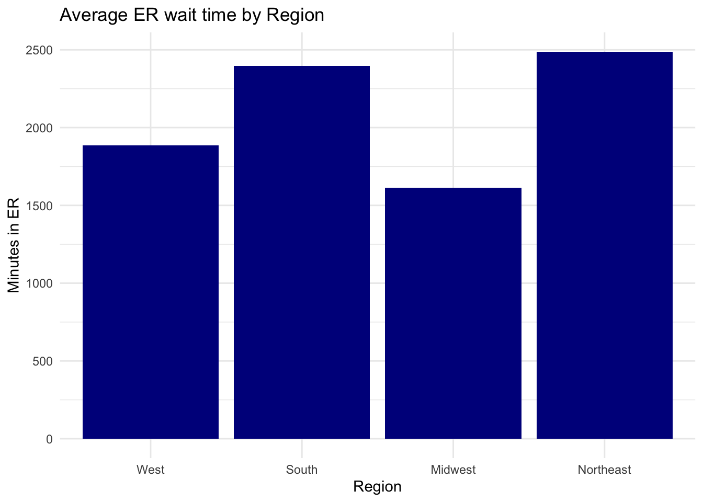
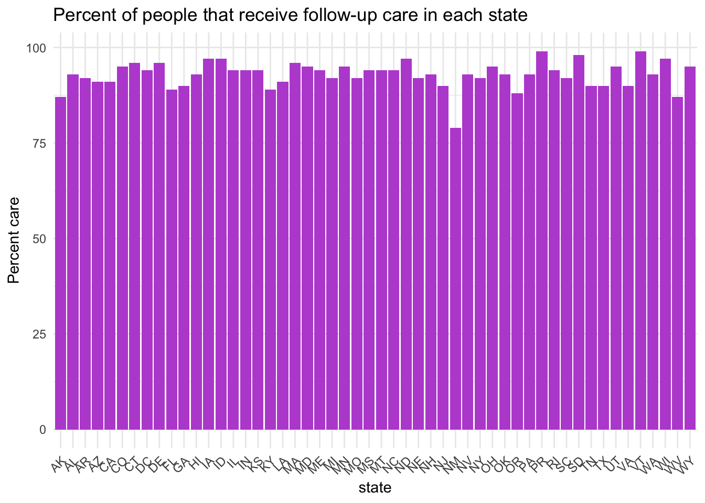
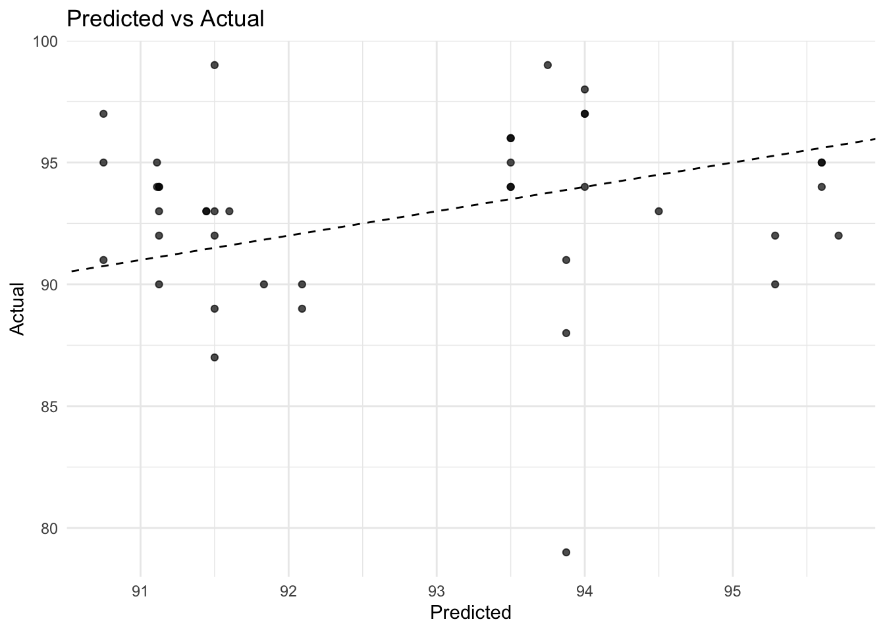
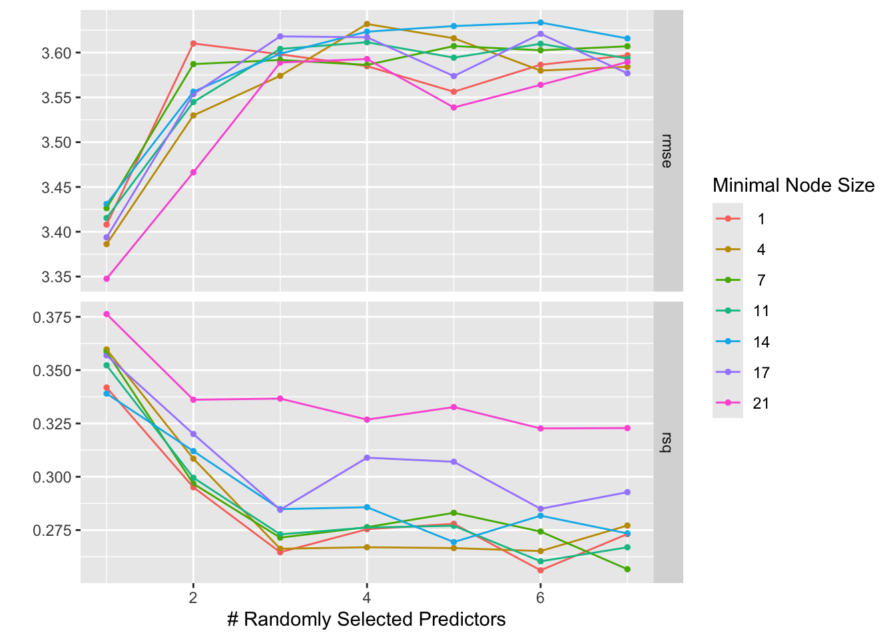

#Since data is already cleaned I will do some EDA!
###I like to start witha summary table to see what my data set even is
summary(care_state)
state condition measure_id measure_name
Length:1232 Length:1232 Length:1232 Length:1232
Class :character Class :character Class :character Class :character
Mode :character Mode :character Mode :character Mode :character
score footnote start_date end_date
Min. : 1 Length:1232 Length:1232 Length:1232
1st Qu.: 70 Class :character Class :character Class :character
Median : 93 Mode :character Mode :character Mode :character
Mean :134
3rd Qu.:193
Max. :730
NA's :155
str(care_state)
'data.frame': 1232 obs. of 8 variables:
$ state : chr "AK" "AK" "AK" "AK" ...
$ condition : chr "Healthcare Personnel Vaccination" "Healthcare Personnel Vaccination" "Emergency Department" "Emergency Department" ...
$ measure_id : chr "HCP_COVID_19" "IMM_3" "OP_18b" "OP_18b_HIGH_MIN" ...
$ measure_name: chr "Percentage of healthcare personnel who are up to date with COVID-19 vaccinations" "Healthcare workers given influenza vaccination Higher percentages are better" "Average (median) time patients spent in the emergency department before leaving from the visit A lower number o"| __truncated__ "Average time patients spent in the emergency department before being sent home A lower number of minutes is better (high)" ...
$ score : num 7.3 80 140 157 136 136 NA 196 230 182 ...
$ footnote : chr NA NA "25, 26" "25, 26" ...
$ start_date : chr "2024-01-01" "2023-10-01" "2023-04-01" "2023-04-01" ...
$ end_date : chr "2024-03-31" "2024-03-31" "2024-03-31" "2024-03-31" ...
#Making some frequency tables
table(care_state$condition)
Cataract surgery outcome Colonoscopy care
56 56
Electronic Clinical Quality Measure Emergency Department
56 672
Healthcare Personnel Vaccination Sepsis Care
112 280
prop.table(table(care_state$condition))
Cataract surgery outcome Colonoscopy care
0.04545455 0.04545455
Electronic Clinical Quality Measure Emergency Department
0.04545455 0.54545455
Healthcare Personnel Vaccination Sepsis Care
0.09090909 0.22727273
measure_name
1 Average time patients spent in the emergency department before being sent home A lower number of minutes is better (high)
2 Average (median) time patients spent in the emergency department before leaving from the visit A lower number of minutes is better
3 Average (median) time patients spent in the emergency department before leaving from the visit- Psychiatric/Mental Health Patients. A lower number of minutes is better
4 Average time patients spent in the emergency department before being sent home A lower number of minutes is better (low)
5 Average time patients spent in the emergency department before being sent home A lower number of minutes is better (moderate)
6 Average time patients spent in the emergency department before leaving from the visit - Psychiatric/Mental Health Patients. A lower number of minutes is better (high)
7 Average time patients spent in the emergency department before leaving from the visit - Psychiatric/Mental Health Patients. A lower number of minutes is better (low)
8 Average time patients spent in the emergency department before leaving from the visit - Psychiatric/Mental Health Patients. A lower number of minutes is better (moderate)
9 Average time patients spent in the emergency department before leaving from the visit - Psychiatric/Mental Health Patients. A lower number of minutes is better (very high)
10 Healthcare workers given influenza vaccination Higher percentages are better
n
1 112
2 56
3 56
4 56
5 56
6 56
7 56
8 56
9 56
10 56
######I already decided that I want to look at colonoscopy care so my questions are a majority of americans recieving their recommended follow-up screenings? Does the percentage vary across states, because I am curious if the south sees lower rates of colonoscopy follow up we can see if region in the united states influence getting a follow up screening, and since there are no other variables relating to colonoscopy we will see if emergency room wait time has an effect on colonoscopy care!
#EDA on variables of interest
#Creating a new variable for geographic region we will do 4 regionscare_state <- care_state %>%mutate(Region =case_when( state %in%c("CA","NV","OR","WA","ID","UT","CO","WY","MT","AK","HI","AZ","NM") ~"West", state %in%c("TX","OK","AR","LA","MS","AL","GA","TN","KY","FL","SC","NC","VA","WV","PR") ~"South", state %in%c("ND","SD","NE","KS","MN","IA","MO","WI","IL","IN","MI","OH") ~"Midwest", state %in%c("MD","DC","DE","PA","NY","NJ","VT","CT","MA","NH","ME","RI") ~"Northeast" ),Region =factor(Region, levels =c("West", "South", "Midwest", "Northeast")) )
#####We will be looking at OP_29 (colonoscopy) and OP_18b
#distribution of wait timeser_wait <- care_state %>%filter(measure_id =="OP_18b", !is.na(score))ggplot(er_wait, aes(x = score)) +geom_histogram(binwidth =10, fill ="olivedrab", color ="white") +theme_minimal() +labs(title ="Distribution of ER Wait Times",x ="Minutes in ER Waiting",y ="Count" )

#####Now lets see what states experience the longest wait times (top 10)
ggplot(er_wait, aes( x = state , y = score)) +geom_bar(stat ="identity", fill ="lightblue") +theme_minimal()+theme(axis.text.x =element_text(angle =45, hjust =1))+labs(title ="Average ER Wait Time by State",x ="state",y ="Minutes in ER" )

#####Filtering to just see the top 10
top_10_wait <- er_wait %>%slice_head(n=10)ggplot(top_10_wait, aes( x = state , y = score)) +geom_bar(stat ="identity", fill ="seagreen") +theme_minimal()+theme(axis.text.x =element_text(angle =45, hjust =1))+labs(title ="Average ER Wait Time by State",x ="state",y ="Minutes in ER" )

#####using new variable Region
ggplot(er_wait, aes(x= Region, y = score)) +geom_bar(stat ="identity", fill ="darkblue")+theme_minimal()+labs(title ="Average ER wait time by Region",x ="Region",y ="Minutes in ER" )

######Now lets look at the same things with colonoscopy care
coloncare <- care_state %>%filter(measure_id =="OP_29", !is.na(score))ggplot(coloncare, aes( x = state , y = score)) +geom_bar(stat ="identity", fill ="mediumorchid") +theme_minimal()+theme(axis.text.x =element_text(angle =45, hjust =1))+labs(title ="Percent of people that receive follow-up care in each state",x ="state",y ="Percent care" )

#Now lets see the bottom 10
bottom_percent <- coloncare %>%arrange(score) %>%slice_head(n=10)ggplot(bottom_percent, aes( x =reorder(state, score) , y = score)) +geom_bar(stat ="identity", fill ="maroon") +geom_text(aes(label =round(score,1)), hjust =1, size =5.5)+theme_minimal()+theme(axis.text.x =element_text(angle =45, hjust =1))+labs(title ="Bottom 10 states of people that receive follow-up care",x ="state",y ="Percent follow-up" ) +ylim(0, max(bottom_percent$score)*1.1)
# A tibble: 3 × 6
.metric .estimator mean n std_err .config
<chr> <chr> <dbl> <int> <dbl> <chr>
1 mae standard 2.86 5 0.427 Preprocessor1_Model1
2 rmse standard 3.59 5 0.693 Preprocessor1_Model1
3 rsq standard 0.268 5 0.0858 Preprocessor1_Model1
cv_predict <-collect_predictions(cv_colon)
#Plot predictions vs observedggplot(cv_predict, aes(x = .pred, y = score)) +geom_point(alpha =0.7) +geom_abline(linetype ="dashed", color ="black") +scale_color_manual(values =c(.pred ="blue", score ="red")) +theme_minimal()+labs(title ="Predicted vs Actual",x ="Predicted",y ="Actual" )
Warning: No shared levels found between `names(values)` of the manual scale and the
data's colour values.

####The data is not very linear but the RMSE tells me that it is not terrible. The r-squared is low so this model is not capturing the pattern well. I will now try a random forest model to better capture the pattern. # Random forest with tuning
→ A | warning: 4 columns were requested but there were 3 predictors in the data. 3 will be used.
There were issues with some computations A: x1
→ B | warning: 5 columns were requested but there were 3 predictors in the data. 3 will be used.
There were issues with some computations A: x1
→ C | warning: 6 columns were requested but there were 3 predictors in the data. 3 will be used.
There were issues with some computations A: x1
→ D | warning: 7 columns were requested but there were 3 predictors in the data. 3 will be used.
There were issues with some computations A: x1
There were issues with some computations A: x9 B: x8 C: x8 D: x8
There were issues with some computations A: x22 B: x22 C: x21 D: x21
There were issues with some computations A: x35 B: x35 C: x35 D: x34
There were issues with some computations A: x35 B: x35 C: x35 D: x35
collect_metrics(rf_tune)
# A tibble: 98 × 8
mtry min_n .metric .estimator mean n std_err .config
<int> <int> <chr> <chr> <dbl> <int> <dbl> <chr>
1 1 1 rmse standard 3.41 5 0.713 Preprocessor1_Model01
2 1 1 rsq standard 0.342 5 0.0613 Preprocessor1_Model01
3 2 1 rmse standard 3.61 5 0.704 Preprocessor1_Model02
4 2 1 rsq standard 0.295 5 0.0730 Preprocessor1_Model02
5 3 1 rmse standard 3.60 5 0.691 Preprocessor1_Model03
6 3 1 rsq standard 0.265 5 0.0841 Preprocessor1_Model03
7 4 1 rmse standard 3.58 5 0.689 Preprocessor1_Model04
8 4 1 rsq standard 0.275 5 0.0805 Preprocessor1_Model04
9 5 1 rmse standard 3.56 5 0.690 Preprocessor1_Model05
10 5 1 rsq standard 0.278 5 0.0844 Preprocessor1_Model05
# ℹ 88 more rows
#####The rmse is pretty similar and the rsq is slightly higher which means this model is capturing the data pattern a little better
autoplot(rf_tune)

#####Now I am going support vector regression (SVR))
set.seed(1234)# Reciperecipe2 <-recipe(score ~ Region, data = train_data) %>%step_dummy(all_nominal_predictors()) %>%step_normalize(all_numeric_predictors())# Cross-validation folds (use vfold_cv instead of loo_cv)set.seed(123)folds2 <-vfold_cv(train_data, v =5, repeats =1)# Model spec with tuningsvr_mod <-linear_reg(penalty =tune(), mixture =tune()) %>%set_engine("glmnet") %>%set_mode("regression")# Workflowworkflow3 <-workflow() %>%add_recipe(recipe2) %>%add_model(svr_mod)# Tuning grid grid <-grid_regular(penalty(range =c(-3, 0)), mixture(range =c(0, 1)),levels =5)# Tune the modelset.seed(123)tune_results <-tune_grid( workflow3,resamples = folds2,grid = grid,metrics =metric_set(rmse, rsq))
→ A | warning: A correlation computation is required, but `estimate` is constant and has 0
standard deviation, resulting in a divide by 0 error. `NA` will be returned.
collect_metrics(tune_results)
# A tibble: 50 × 8
penalty mixture .metric .estimator mean n std_err .config
<dbl> <dbl> <chr> <chr> <dbl> <int> <dbl> <chr>
1 0.001 0 rmse standard 3.37 5 0.600 Preprocessor1_Model01
2 0.001 0 rsq standard 0.346 5 0.0984 Preprocessor1_Model01
3 0.00562 0 rmse standard 3.37 5 0.600 Preprocessor1_Model02
4 0.00562 0 rsq standard 0.346 5 0.0984 Preprocessor1_Model02
5 0.0316 0 rmse standard 3.37 5 0.600 Preprocessor1_Model03
6 0.0316 0 rsq standard 0.346 5 0.0984 Preprocessor1_Model03
7 0.178 0 rmse standard 3.37 5 0.601 Preprocessor1_Model04
8 0.178 0 rsq standard 0.347 5 0.0988 Preprocessor1_Model04
9 1 0 rmse standard 3.38 5 0.597 Preprocessor1_Model05
10 1 0 rsq standard 0.344 5 0.100 Preprocessor1_Model05
# ℹ 40 more rows
#####I selected the SVR model to do the final selection step on because it performed the best in cross validation. Metrics from evaluating the model on the test set were rmse = 2.45 and r-squared of 0.29. This is slightly worse then then during cross validation. This may be due to overfitting but the model was also limited due to the small dataset. Small datasets are not ideal for machine learning models and can have high variance